Redis
7高级数据类型
7.1Bitmaps
获取指定key对应偏移量上的bit值
1
getbit key offset
设置指定key对应偏移量上的bit值，value只能是1或0
1
setbit key offset value
对指定key按位进行交、并、非、异或操作，并将结果保存到destKey中
1
bitop op destKey key1 [key2...]
- and：交
- or：并
- not：非
- xor：异或
统计指定key中1的数量
1
bitcount key [start end]
应用场景13
- 统计每天某一部电影是否被点播
- 统计每天有多少部电影被点播
- 统计每周/月/年有多少部电影被点播
- 统计年度哪部电影没有被点播
- 答：redis 应用于信息状态统计
7.2HyperLogLog
HyperLogLog 是用来做基数统计的，运用了LogLog的算法
基数是数据集去重后元素个数
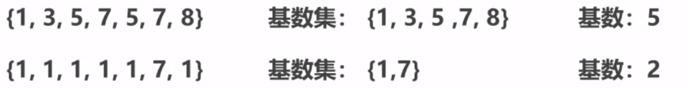
添加数据
1
pfadd key element [element ...]
统计数据
1
pfcount key [key ...]
合并数据
1
pfmerge destkey sourcekey [sourcekey...]
相关说明
- 用于进行基数统计，不是集合，不保存数据，只记录数量而不是具体数据
- 核心是基数估算算法，最终数值存在一定误差
- 误差范围：基数估计的结果是一个带有 0.81% 标准错误的近似值
- 耗空间极小，每个hyperloglog key占用了12K的内存用于标记基数
- pfadd命令不是一次性分配12K内存使用，会随着基数的增加内存逐渐增大
- Pfmerge命令合并后占用的存储空间为12K，无论合并之前数据量多少
应用场景15
- 统计独立UV
- 答：redis 应用于独立信息统计
7.3GEO
添加坐标点
1
geoadd key longitude latitude member [longitude latitude member ...]
获取坐标点
1
geopos key member [member ...]
计算坐标点距离
1 | geodist key member1 member2 [unit] |
根据坐标求范围内的数据
1
georadius key longitude latitude radius m|km|ft|mi [withcoord] [withdist] [withhash] [count count]
根据点求范围内数据.
1
georadiusbymember key member radius m|km|ft|mi [withcoord] [withdist] [withhash] [count count]
获取指定点对应的坐标hash值
1
geohash key member [member ...]
应用场景15
- 统计独立UV
- 答：redis 应用于地理位置计算
8主从复制
8.1主从复制简介
单机redis的风险与问题
- 机器故障【硬盘故障、系统崩溃】，数据丢失，很可能对业务造成灾难性打击
- 容量瓶颈【内存不足】，硬件条件跟不上
为了避免单点Redis服务器故障，准备多台服务器，互相连通。
将数据复制多个副本保存在不同的服务器上，连接在一起，并保证数据是同步的。即使有其中一台服务器宕机，其他服务器依然可以继续提供服务，实现Redis的高可用，同时实现数据冗余备份。
- 提供数据方：master 主服务器，主节点，主库，主客户端
- 接收数据方：slave 从服务器，从节点，从库，从客户端
- 需要解决的问题： 数据同步
- 核心工作： master的数据复制到slave中
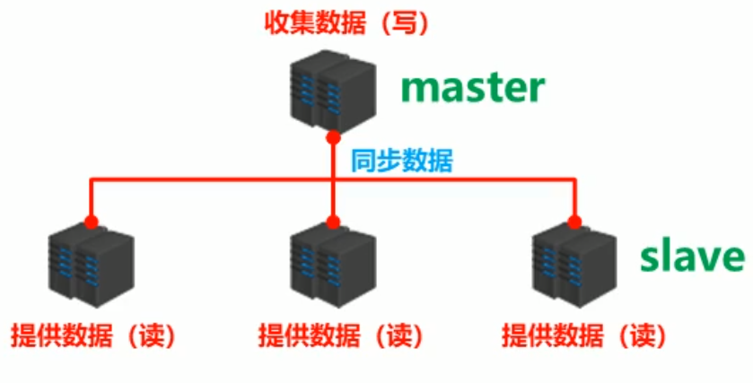
主从复制
- 主从复制即将master中的数据即时、有效的复制到slave中
- 特征：一个master可以拥有多个slave，一个slave只对应一个master
- 职责：
- master:①写数据 ②执行写操作时，将出现变化的数据自动同步到slave ③读数据（可忽略）
- slave:①读数据 ②写数据（禁止）
- 作用
- 读写分离：master写、slave读，提高服务器的读写负载能力
- 负载均衡：基于主从结构，配合读写分离，由slave分担master负载，并根据需求的变化，改变slave的数量，通过多个从节点分担数据读取负载，大大提高Redis服务器并发量与数据吞吐量
- 故障恢复：当master出现问题时，由slave提供服务，实现快速的故障恢复
- 数据冗余：实现数据热备份，是持久化之外的一种数据冗余方式
- 高可用基石：基于主从复制，构建哨兵模式与集群，实现Redis的高可用方案
8.2主从复制工作流程
主从复制过程大体可以分为3个阶段
- 建立连接阶段（即准备阶段）
- 数据同步阶段
- 命令传播阶段
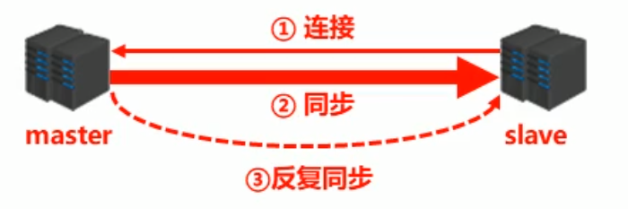
8.2.1阶段一：建立连接阶段
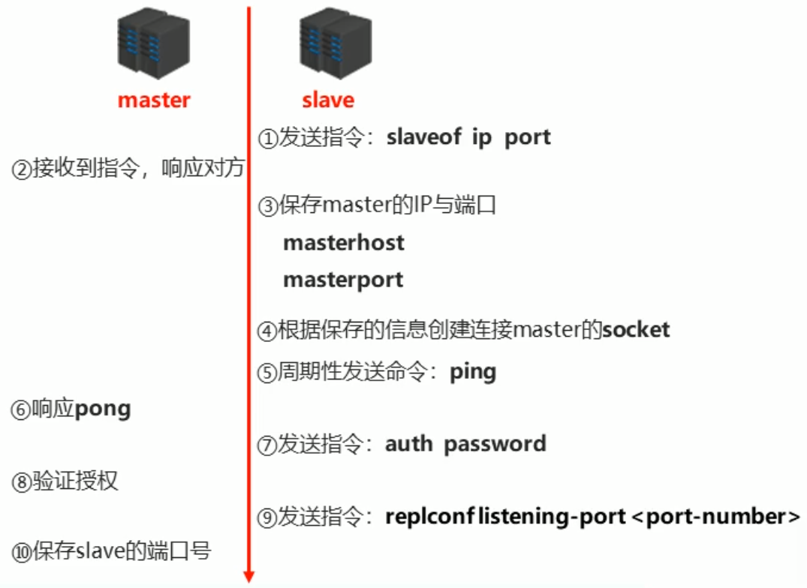
建立slave到master的连接，使master能够识别slave，并保存slave端口号
主从连接（slave连接master）
方式一：客户端发送命令
1
slaveof <masterip> <masterport>
方式二：启动服务器参数
1
redis-server -slaveof <masterip> <masterport>
方式三：服务器配置
1
slaveof <masterip> <masterport>
主从断开连接
客户端发送命令
1
slaveof no one
说明： slave断开连接后，不会删除已有数据，只是不再接受master发送的数据
slave启动服务器设置密码
1
redis-server –a <password>
slave配置文件设置密码
1
masterauth <password>
查看
1
info
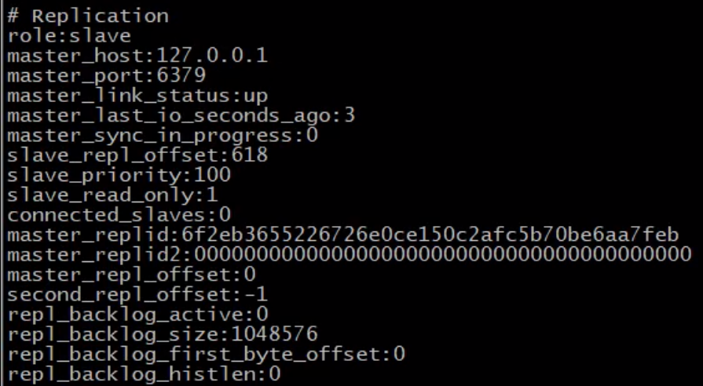
8.2.2阶段二：数据同步阶段工作流程
在slave初次连接master后，复制master中的所有数据到slave
将slave的数据库状态更新成master当前的数据库状态
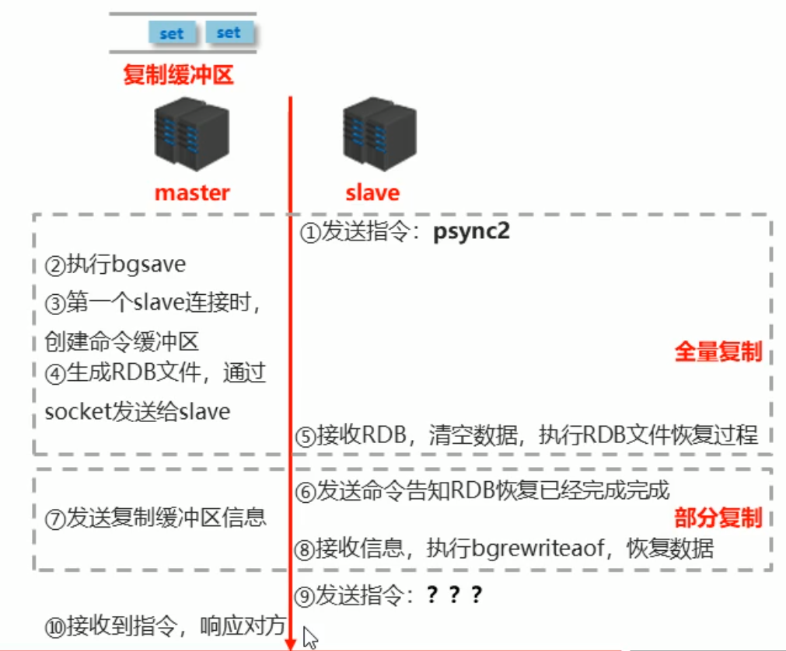
步骤1：请求同步数据
步骤2：创建RDB同步数据
步骤3：恢复RDB同步数据
步骤4：请求部分同步数据
步骤5：恢复部分同步数据 至此，数据同步工作完成！
状态：
- slave： 具有master端全部数据，包含RDB过程接收的数据
- master： 保存slave当前数据同步的位置
总体： 之间完成了数据克隆
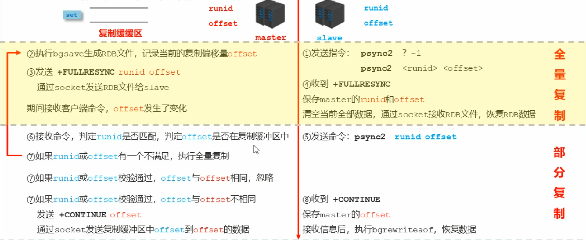
8.2.2.1部分复制的三个核心要素——服务器的运行 id（run id）
- 概念：服务器运行ID是每一台服务器每次运行的身份识别码，一台服务器多次运行可以生成多个运行id
- 组成：运行id由40位字符组成，是一个随机的十六进制字符 例如：fdc9ff13b9bbaab28db42b3d50f852bb5e3fcdce
- 作用：运行id被用于在服务器间进行传输，识别身份 如果想两次操作均对同一台服务器进行，必须每次操作携带对应的运行id，用于对方识别
- 实现方式：运行id在每台服务器启动时自动生成的，master在首次连接slave时，会将自己的运行ID发 送给slave，slave保存此ID，通过info Server命令，可以查看节点的runid
8.2.2.2部分复制的三个核心要素——主服务器的复制积压缓冲区
- 概念：复制缓冲区，又名复制积压缓冲区，是一个先进先出（FIFO）的队列，用于存储服务器执行过的命 令，每次传播命令，master都会将传播的命令记录下来，并存储在复制缓冲区
- 复制缓冲区默认数据存储空间大小是1M，由于存储空间大小是固定的，当入队元素的数量大于队 列长度时，最先入队的元素会被弹出，而新元素会被放入队列
- 由来：每台服务器启动时，如果开启有AOF或被连接成为master节点，即创建复制缓冲区
- 作用：用于保存master收到的所有指令（仅影响数据变更的指令，例如set，select）
- 数据来源：当master接收到主客户端的指令时，除了将指令执行，会将该指令存储到缓冲区中

8.2.2.3部分复制的三个核心要素——主从服务器的复制偏移量
- 概念：一个数字，描述复制缓冲区中的指令字节位置
- 分类：
- master复制偏移量：记录发送给所有slave的指令字节对应的位置（多个）
- slave复制偏移量：记录slave接收master发送过来的指令字节对应的位置（一个）
- 数据来源： master端：发送一次记录一次 slave端：接收一次记录一次
- 作用：同步信息，比对master与slave的差异，当slave断线后，恢复数据使用
8.2.2.4数据同步阶段master
如果master数据量巨大，数据同步阶段应避开流量高峰期，避免造成master阻塞，影响业务正常执行
复制缓冲区大小设定不合理，会导致数据溢出。如进行全量复制周期太长，进行部分复制时发现数据已经存在丢失的情况，必须进行第二次全量复制，致使slave陷入死循环状态。
1
repl-backlog-size 1mb
master单机内存占用主机内存的比例不应过大，建议使用50%-70%的内存，留下30%-50%的内存用于执行bgsave命令和创建复制缓冲区
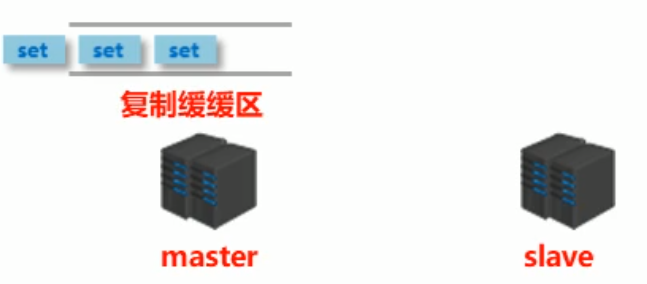
8.2.2.5数据同步阶段slave
为避免slave进行全量复制、部分复制时服务器响应阻塞或数据不同步，建议关闭此期间的写数据功能
1
slave-serve-stale-data yes|no
数据同步阶段，master发送给slave信息可以理解master是slave的一个客户端，主动向slave发送命令
多个slave同时对master请求数据同步，master发送的RDB文件增多，会对带宽造成巨大冲击，如果 master带宽不足，因此数据同步需要根据业务需求，适量错峰
slave过多时，建议调整拓扑结构，由一主多从结构变为树状结构，中间的节点既是master，也是 slave。注意使用树状结构时，由于层级深度，导致深度越高的slave与最顶层master间数据同步延迟 较大，数据一致性变差，应谨慎选择
8.2.3阶段三：命令传播阶段
当master数据库状态被修改后，导致主从服务器数据库状态不一致，此时需要让主从数据同步到一致的 状态，同步的动作称为命令传播
master将接收到的数据变更命令发送给slave，slave接收命令后执行命令
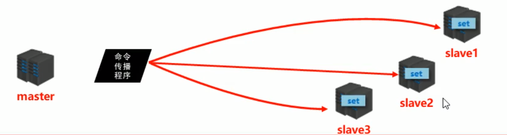
命令传播阶段出现了断网现象
- 网络闪断闪连——忽略
- 短时间网络中断——部分复制
- 长时间网络中断——全量复制
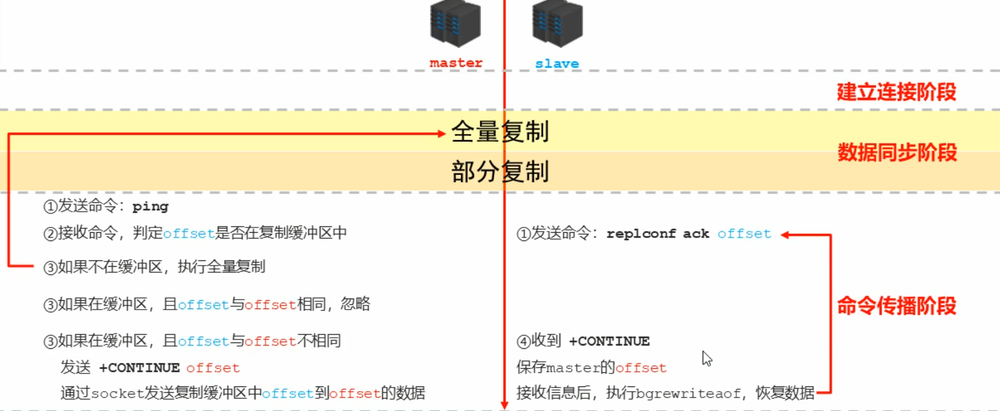
8.2.3.1心跳机制
- 进入命令传播阶段候，master与slave间需要进行信息交换，使用心跳机制进行维护，实现双方连接保持在线
- master心跳：
- 指令：PING
- 周期：由repl-ping-slave-period决定，默认10秒
- 作用：判断slave是否在线
- 查询：INFO replication 获取slave最后一次连接时间间隔，lag项维持在0或1视为正常
- slave心跳任务
- 指令：REPLCONF ACK {offset}
- 周期：1秒
- 作用1：汇报slave自己的复制偏移量，获取最新的数据变更指令
- 作用2：判断master是否在线
8.2.3.2心跳阶段注意事项
当slave多数掉线，或延迟过高时，master为保障数据稳定性，将拒绝所有信息同步操作
1
2min-slaves-to-write [2]
min-slaves-max-lag [8]slave数量少于2个，或者所有slave的延迟都大于等于10秒时，强制关闭master写功能，停止数据同步
slave数量由slave发送REPLCONF ACK命令做确认
slave延迟由slave发送REPLCONF ACK命令做确认
9主从复制常见问题
9.1频繁的全量复制一
伴随着系统的运行，master的数据量会越来越大，一旦master重启，runid将发生变化，会导致全部slave的 全量复制操作
内部优化调整方案：
- master内部创建master_replid变量，使用runid相同的策略生成，长度41位，并发送给所有slave
- 在master关闭时执行命令 shutdown save，进行RDB持久化,将runid与offset保存到RDB文件中
- repl-id repl-offset
- 通过redis-check-rdb命令可以查看该信息
master重启后加载RDB文件，恢复数据重启后，将RDB文件中保存的repl-id与repl-offset加载到内存中
1
master_repl_id = repl master_repl_offset = repl-offset
通过info命令可以查看该信息
*作用： 本机保存上次runid，重启后恢复该值，使所有slave认为还是之前的master *
9.2频繁的全量复制二
问题现象：网络环境不佳，出现网络中断，slave不提供服务
问题原因：复制缓冲区过小，断网后slave的offset越界，触发全量复制
最终结果：slave反复进行全量复制
解决方案：修改复制缓冲区大小
1
repl-backlog-size
建议设置如下：
- 测算从master到slave的重连平均时长second
- 获取master平均每秒产生写命令数据总量write_size_per_second
- 最优复制缓冲区空间 = 2 * second * write_size_per_second
9.3频繁的网络中断一
问题现象：master的CPU占用过高 或 slave频繁断开连接
问题原因：
- slave每1秒发送REPLCONF ACK命令到master，当slave接到了慢查询时（keys * ，hgetall等），会大量占用CPU性能，master每1秒调用复制定时函数replicationCron()，比对slave发现长时间没有进行响应
最终结果：master各种资源（输出缓冲区、带宽、连接等）被严重占用
解决方案：通过设置合理的超时时间，确认是否释放slave
1
repl-timeout
该参数定义了超时时间的阈值（默认60秒），超过该值，释放slave
9.4频繁的网络中断二
问题现象：slave与master连接断开
问题原因
- master发送ping指令频度较低
- master设定超时时间较短
- ping指令在网络中存在丢包
解决方案：提高ping指令发送的频度
1
repl-ping-slave-period
超时时间repl-time的时间至少是ping指令频度的5到10倍，否则slave很容易判定超时
9.5数据不一致
- 问题现象：多个slave获取相同数据不同步
- 问题原因：网络信息不同步，数据发送有延迟
- 解决方案
- 优化主从间的网络环境，通常放置在同一个机房部署，如使用阿里云等云服务器时要注意此现象
- 监控主从节点延迟（通过offset）判断，如果slave延迟过大，暂时屏蔽程序对该slave的数据访问
10哨兵模式
10.1哨兵简介
引入——主机“宕机”
- 关闭master和所有slave
- 找一个slave作为master
- 修改其他slave的配置，连接新的主
- 启动新的master与slave
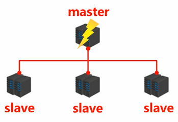
哨兵(sentinel) 是一个分布式系统，用于对主从结构中的每台服务器进行监控，当出现故障时通过投票机制选择新的 master并将所有slave连接到新的master。
哨兵的作用
- 监控：不断的检查master和slave是否正常运行。 master存活检测、master与slave运行情况检测
- 通知（提醒）：当被监控的服务器出现问题时，向其他（哨兵间，客户端）发送通知。
- 自动故障转移：断开master与slave连接，选取一个slave作为master，将其他slave连接到新的master，并告知客户端新的服 务器地址
注意：
- 哨兵也是一台redis服务器，只是不提供数据服务
- 通常哨兵配置数量为单数
10.2启用哨兵模式
配置一拖二的主从结构
配置三个哨兵（配置相同，端口不同）
sentinel.conf文件
启动哨兵
1
redis-sentinel [sentinel-端口号.conf]
10.3哨兵工作原理
监控阶段
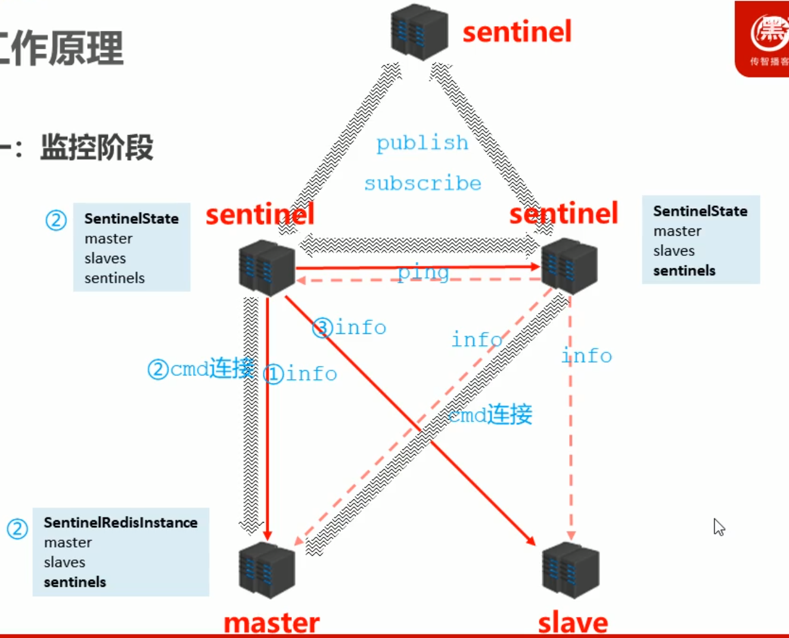
通知阶段
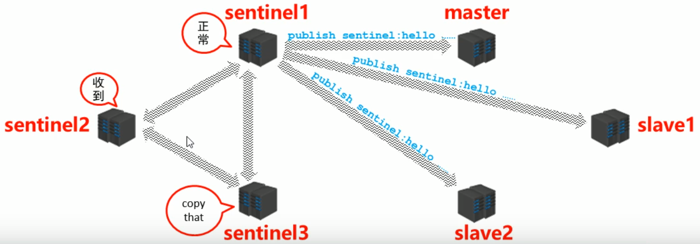
故障转移阶段
发现问题
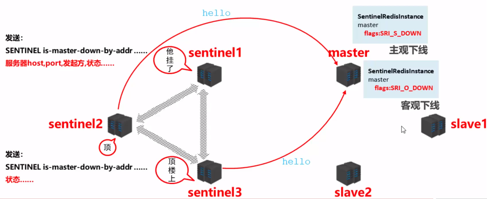
竞选负责人，优选新master
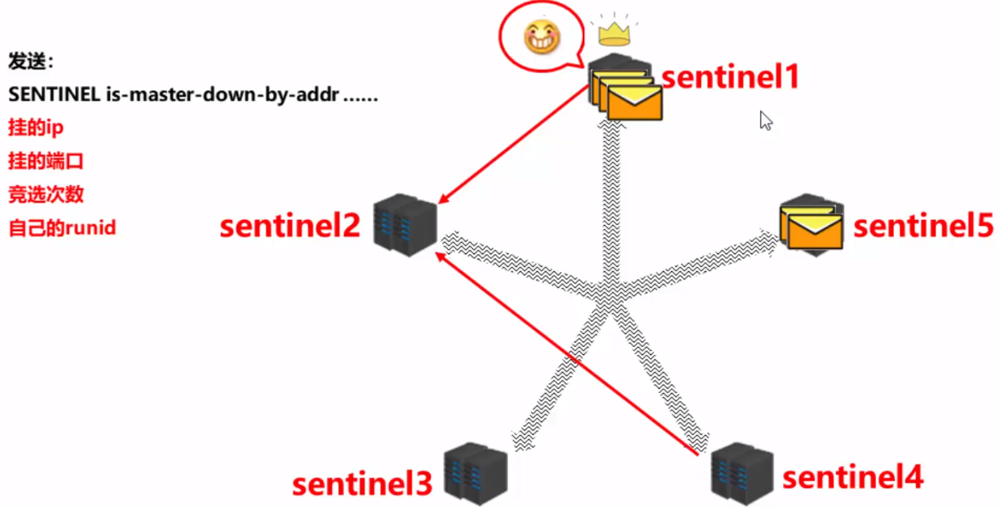
新master上任，其他slave切换master，原master作为slave故障恢复后连接
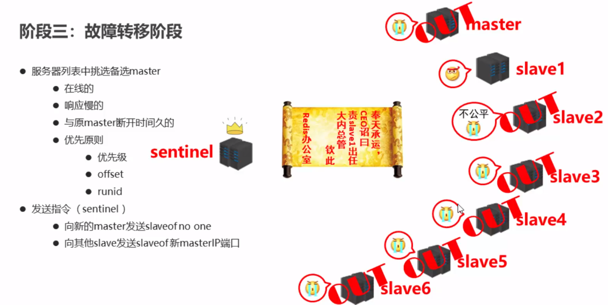
11集群
11.1集群简介
- 集群就是使用网络将若干台计算机联通起来，并提供统一的管理方式，使其对外呈现单机的服务效果
- 作用
- 分散单台服务器的访问压力，实现负载均衡
- 分散单台服务器的存储压力，实现可扩展性
- 降低单台服务器宕机带来的业务灾难
11.2Redis集群结构设计
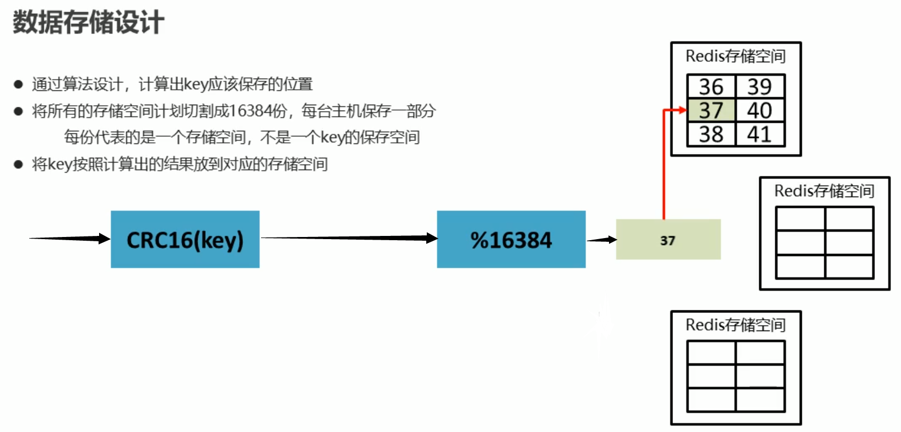
增减节点就是改变槽的位置
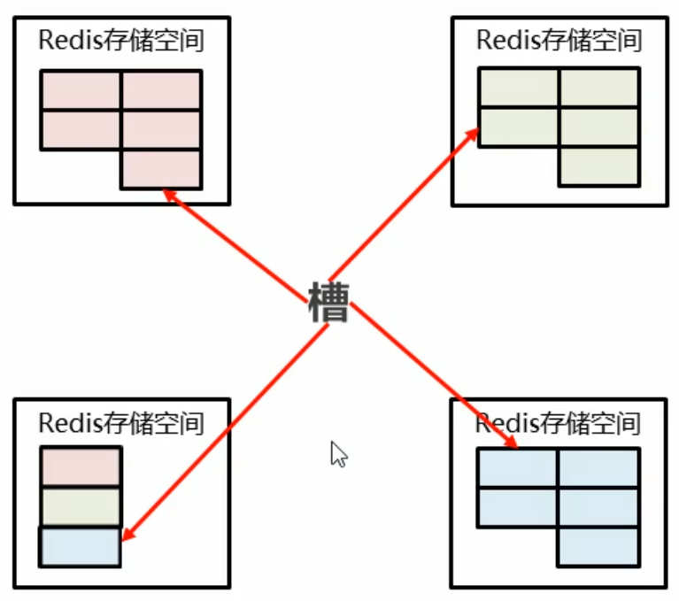
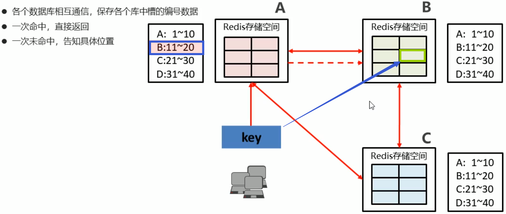
11.3cluster集群结构搭建
11.3.1Cluster配置
添加节点
1
cluster-enabled yes|no
cluster配置文件名，该文件属于自动生成，仅用于快速查找文件并查询文件内容
1
cluster-config-file <filename>
节点服务响应超时时间，用于判定该节点是否下线或切换为从节点
1
cluster-node-timeout <milliseconds>
master连接的slave最小数量
1
cluster-migration-barrier <count>
11.3.2Cluster节点操作命令
查看集群节点信息
1
cluster nodes
进入一个从节点 redis，切换其主节点
1
cluster replicate <master-id>
发现一个新节点，新增主节点
1
cluster meet ip:port
忽略一个没有solt的节点
1
cluster forget <id>
手动故障转移
1
cluster failover
12企业级解决方案
12.1缓存预热
- 缓存预热就是系统启动前，提前将相关的缓存数据直接加载到缓存系统。避免在用户请求的时候，先查询数据库，然后再将数据缓 存的问题！用户直接查询事先被预热的缓存数据！
- 现象：服务器启动后迅速宕机
- 问题排查：
- 请求数量较高
- 主从之间数据吞吐量较大，数据同步操作频度较高
- 解决方案
- 前置准备工作
- 日常例行统计数据访问记录，统计访问频度较高的热点数据
- 利用LRU数据删除策略，构建数据留存队列 例如：storm与kafka配合
- 准备工作
- 将统计结果中的数据分类，根据级别，redis优先加载级别较高的热点数据
- 利用分布式多服务器同时进行数据读取，提速数据加载过程
- 热点数据主从同时预热
- 实施
- 使用脚本程序固定触发数据预热过程
- 如果条件允许，使用了CDN（内容分发网络），效果会更好
- 前置准备工作
12.2缓存雪崩
缓存雪崩就是瞬间过期数据量太大，导致对数据库服务器造成压力。如能够有效避免过期时间集中，可以有效解决雪崩现象的出现 （约40%），配合其他策略一起使用，并监控服务器的运行数据，根据运行记录做快速调整。
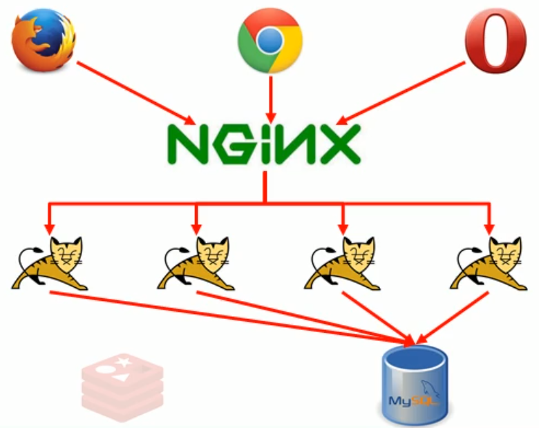
现象
- 系统平稳运行过程中，忽然数据库连接量激增
- 应用服务器无法及时处理请求
- 大量408，500错误页面出现
- 客户反复刷新页面获取数据
- 数据库崩溃
- 应用服务器崩溃
- 重启应用服务器无效
- Redis服务器崩溃
- Redis集群崩溃
- 重启数据库后再次被瞬间流量放倒
问题排查
- 在一个较短的时间内，缓存中较多的key集中过期
- 此周期内请求访问过期的数据，redis未命中，redis向数据库获取数据
- 数据库同时接收到大量的请求无法及时处理
- Redis大量请求被积压，开始出现超时现象
- 数据库流量激增，数据库崩溃
- 重启后仍然面对缓存中无数据可用
- Redis服务器资源被严重占用，Redis服务器崩溃
- Redis集群呈现崩塌，集群瓦解
- 应用服务器无法及时得到数据响应请求，来自客户端的请求数量越来越多，应用服务器崩溃
- 应用服务器，redis，数据库全部重启，效果不理想
问题分析
- 短时间范围内
- 大量key集中过期
解决方案（道）
- 更多的页面静态化处理
- 构建多级缓存架构【Nginx缓存+redis缓存+ehcache缓存】
- 检测Mysql严重耗时业务进行优化【对数据库的瓶颈排查：例如超时查询、耗时较高事务等】
- 灾难预警机制
- 监控redis服务器性能指标
- CPU占用、CPU使用率
- 内存容量
- 查询平均响应时间
- 线程数
- 限流、降级 短时间范围内牺牲一些客户体验，限制一部分请求访问，降低应用服务器压力，待业务低速运转后再逐步放开访问
解决方案（术）
- LRU与LFU切换
- 数据有效期策略调整
- 根据业务数据有效期进行分类错峰，A类90分钟，B类80分钟，C类70分钟
- 过期时间使用固定时间+随机值的形式，稀释集中到期的key的数量
- 超热数据使用永久key
- 定期维护（自动+人工） 对即将过期数据做访问量分析，确认是否延时，配合访问量统计，做热点数据的延时
- 加锁 慎用！
12.3缓存击穿
缓存击穿就是单个高热数据过期的瞬间，数据访问量较大，未命中redis后，发起了大量对同一数据的数据库访问，导致对数据库服 务器造成压力。应对策略应该在业务数据分析与预防方面进行，配合运行监控测试与即时调整策略，毕竟单个key的过期监控难度 较高，配合雪崩处理策略即可
现象
- 系统平稳运行过程中
- 数据库连接量瞬间激增
- Redis服务器无大量key过期
- Redis内存平稳，无波动
- Redis服务器CPU正常
- 数据库崩溃
问题排查
- Redis中某个key过期，该key访问量巨大
- 多个数据请求从服务器直接压到Redis后，均未命中
- Redis在短时间内发起了大量对数据库中同一数据的访问
问题分析
- 单个key高热数据
- key过期
解决方案（术）
- 预先设定 以电商为例，每个商家根据店铺等级，指定若干款主打商品，在购物节期间，加大此类信息key的过期时长 注意：购物节不仅仅指当天，以及后续若干天，访问峰值呈现逐渐降低的趋势
- 现场调整 监控访问量，对自然流量激增的数据延长过期时间或设置为永久性key
- 后台刷新数据 启动定时任务，高峰期来临之前，刷新数据有效期，确保不丢失
- 二级缓存 设置不同的失效时间，保障不会被同时淘汰就行
- 加锁 分布式锁，防止被击穿，但是要注意也是性能瓶颈，慎重！
12.4缓存穿透
缓存击穿访问了根本不存在的数据，跳过了合法数据的redis数据缓存阶段，每次访问数据库，导致对数据库服务器造成压力。
通常此类数据的出现量是一个较低的值，当出现此类情况以毒攻毒，并及时报警。应对策略应该在临时预案防范方面多做文章。
无论是黑名单还是白名单，都是对整体系统的压力，警报解除后尽快移除。
现象
- 系统平稳运行过程中
- 应用服务器流量随时间增量较大
- Redis服务器命中率随时间逐步降低
- Redis内存平稳，内存无压力
- Redis服务器CPU占用激增
- 数据库服务器压力激增
- 数据库崩溃
问题排查
- 获取的数据在数据库中也不存在，数据库查询未得到对应数据
- Redis获取到null数据未进行持久化，直接返回
- 下次此类数据到达重复上述过程
- 出现黑客攻击服务器
问题分析
- Redis中大面积出现未命中
- 出现非正常URL访问
解决方案（术）
- 缓存null【对查询结果为null的数据进行缓存（长期使用，定期清理），设定短时限，例如30-60秒，最高5分钟】
- 白名单策略
- 提前预热各种分类数据id对应的bitmaps，id作为bitmaps的offset，相当于设置了数据白名单。当加载正常数据时，放 行，加载异常数据时直接拦截（效率偏低）
- 使用布隆过滤器（有关布隆过滤器的命中问题对当前状况可以忽略）
- 实施监控【实时监控redis命中率（业务正常范围时，通常会有一个波动值）与null数据的占比】
- 非活动时段波动：通常检测3-5倍，超过5倍纳入重点排查对象
- 活动时段波动：通常检测10-50倍，超过50倍纳入重点排查对象
- 根据倍数不同，启动不同的排查流程。然后使用黑名单进行防控（运营）
- key加密
- 问题出现后，临时启动防灾业务key，对key进行业务层传输加密服务，设定校验程序，过来的key校验
- 例如每天随机分配60个加密串，挑选2到3个，混淆到页面数据id中，发现访问key不满足规则，驳回数据访问
12.5性能指标监控
性能指标：Performance
Name Description latency Redis响应一个请求的时间 instantaneous_ ops_per_sec 平均每秒处理请求总数 hit rate (calculated) 缓存命中率(计算出来的) 内存指标：Memory
Name Description used_memory 已使用内存 mem_fragmentation_ratio 内存碎片率 evicted_keys 由于最大内存限制被移除的key的数量 blocked_clients 由于BLPOP, BRPOP, or BRPOPLPUSH而备阻塞的客户端 基本活动指标：Basic activity
Name Description connected_clients 客户端连接数 connected_slaves Slave数量 master_last_io_seconds_ago 最近一次主从交互之后的秒数 keyspace 数据库中的key值总数 持久性指标：Persistence
Name description rdb_last_save_time 最后一次持久化保存到磁盘的时间戳 rdb_changes_since_last_save 自最后一次持久化以来数据库的更改数 错误指标：Error
Name Description rejected_ connections 由于达到maxclient限制而被拒绝的连接数 keyspace_misses Key值查找失败(没有命中)次数 master_ link_down_since_seconds 主从断开的持续时间(以秒为单位) 监控方式
- 工具
- Cloud Insight Redis
- Prometheus
- Redis-stat
- Redis-faina
- RedisLive
- zabbix
- 命令
- benchmark【指令】
- monitor【redis cli指令】
- showlog【redis cli指令】
- 工具
179.redis 是什么？都有哪些使用场景？
- redis用于控制数据库表主键id ,为数据库表主键提供生成策略,保障数据库表的主键唯一性
- redis 控制数据的生命周期,通过数据是否失效控制业务行为,适用于所有具有时效性限定控制的操作——setex
- redis应用于各种结构型和非结构型高热度数据访问加速——String
- redis应用于购物车数据存储设计——hash
- redis应用于抢购,限购类、限量发放优惠卷、激活码等业务的数据存储设计——hash
- redis应用于具有操作先后顺序的数据控制——list
- redis应用于最新消息展示——list
- redis应用于随机推荐类信息检索,例如热点歌单推荐,热点新闻推荐,热卖旅游线路,应用APP推荐,大V推荐等——set
- redis应用于同类信息的关联搜索,二度关联搜索,深度关联搜索——set
- redis应用于同类型不重复数据的合并操作——set
- redis应用于计数器组合排序功能对应的排名——sorted_set
- redis应用于定时任务执行顺序管理或任务过期管理
- redis应用于即时任务/消息队列执行管理
- redis应用于按次结算的服务控制
- redis应用于基于时间顺序的数据操作,而不关注具体时间
180.redis 有哪些功能？
181.redis 和 memecache 有什么区别？
182.redis 为什么是单线程的？
183.什么是缓存穿透？怎么解决？
184.redis 支持的数据类 型有哪些？
185.redis 支持的 java 客户端都有哪些？
186.jedis 和 redisson 有哪些区别？
187.怎么保证缓存和数据库数据的一致性？
188.redis 持久化有几种方式？
189.redis 怎么实现分布式锁？
190.redis 分布式锁有什么缺陷？
191.redis 如何做内存优化？
192.redis 淘汰策略有哪些？
193.redis 常见的性能问题有哪些？该如何解决？
原文作者: 掘金木匠
原文链接: http://goldcarpenter.github.io/2020/04/17/Redis_Part3/
版权声明: 转载请注明出处(必须保留作者署名及链接)